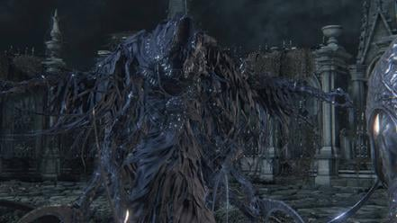

Great Ones (上位者 Jōisha lit. "Superior One") are beings that were researched at Byrgenwerth by Laurence and Willem. Little is known about their nature, their motives, and how many there are. Some Great Ones are elite Bosses in Bloodborne. The 6 Great Ones THAT THE PLAYER CAN FIGHT are listed below. Please click the specific page for more information.
Great Ones

Amygdala |
|
| Location | Nightmare Frontier, Defiled Chalice |
| Drops | Ailing Loran Chalice, Great Pthumeru Ihyll Chalice |
| Weaknesses | Arcane, Fire, Bolt |


Ebrietas, Daughter of the Cosmos |
|
| Location | Altar of Despair |
| Drops | Great Isz Chalice |
| Weaknesses | Thrust, Bolt and Fire |

Mergo's Wet Nurse |
|
| Location | Nightmare of Mensis |
| Drops | Third Umbilical Cord |
| Weaknesses | Arcane, Fire, Bolt and Rapid Poison |


Rom, the Vacuous Spider |
|
| Location | Moonside Lake |
| Drops | Kin Coldblood (12) x1 |
| Weaknesses | Bolt, Fire, Arcane |
This is just a bad and confusing page. Why separate Great Ones from the Boss list? These are all still bosses. Some of these aren't even true Great Ones, Rom for example is Kin, it's even right there in the name of his drop, "Kin Coldblood". Orphan of Kos is a Great One but he's not here, he's on the DLC boss tab. There's no consistency here and only serves to confuse people. I've taken it upon myself to move all these bosses to the boss tab (can you believe that tab used to literally say there are only "11 bosses"???) and let this page exist until someone can delete it or actually revamp it to provide information about, you know, Great Ones -- their lore, history, etc. That would be an actually useful page to have.

- Anonymous
Why is this even separate from the main boss page? Who gives a **** if they're great ones; they're bosses first. Needless separation.
- Anonymous
Just a thought, but five of the great ones are either explicitly or implicitly female, and the others I believe are ambiguous. Mergo's Wet nurse is implied due to their title/job. The Moon Presence is implied with the name Flora. Rom was confirmed by Miyazaki, and Ebrietas is called "Daughter" in her title, and we have "Mother Kos". I don't believe it's been stated or implied that there is a male great one. You could argue the orphan of kos is based on physical appearance, but I'm not sure how much weight you can put in that given that most of them are nightmare squids. That and the statement that "Every great one loses a child" might mean that all great ones are, or are considered to be, female. I'm probably wrong, but I find it interesting.
- Anonymous
- Anonymous
┏━━━┓
┃┏━┓┃
┃┗━━┳━━┳┓┏┳━━┓
┗━━┓┃┏┓┃┃┃┃┏┓┃
┃┗━┛┃┗┛┃┗┛┃┗┛┃
┗━━━┻━━┻━━┫┏━┛
╋╋╋╋╋╋╋╋╋╋┃┃
╋╋╋╋╋╋╋╋╋╋┗┛
Rom is not a full Great One, she is a Kin and drops a Kin Coldblood, while Orphan of Kos is a Great One, just like Mergo
- Anonymous
- Anonymous
Has anyone ever wondered who the Orphan's (of Kos) father is?
- Anonymous
- Anonymous
- Anonymous
Between Mergo's overabundance of sharp implements and an apparent lack of mammary glands, I seriously doubt she got a callback from many would-be employers.
- Anonymous
honestly, calling rom an "elite boss" is sugarcoating lol. i didn't realize it was different from the cleric beast or any other big boss until after i wiped the lake with it
- Anonymous
Oedon hasn’t made it on to this list but for understandable reasons, it’s a formless great one. Also the Eye of Mensis is a great one. Rom is tricky do to the fact she use to be human who successfully ascended into a Great One. If there was a pseudo Great One category I’d say she’s would fall there
- Anonymous
is rom a true great one or just kin? after you kill her, it does not say nightmare slain, but only prey slaughtered. and she does nor drop a great ones coldblood but KIN COLDBLOOD.
- Anonymous
mergo's wet nurse is not a great one, but only the caretaker of mergo, the baby in the casket
- Anonymous
Why is Orphan of Kos not listed? He is literally born from Kos, who is clearly a Great One. He also is stated many times as one. Has this page just not been updated since the Old Hunter's DLC?
- Anonymous
Lmao it literally says "that the player can fight" that's why some aren't on this list
- Anonymous
- Anonymous
This page is so wrong. The Great Ones (Elder Gods) are as follows: Rom, Ebrietas, Moon Presence, Mergo, Kos and the Nameless Vileblood Source. Amygdala is no Great One and is in fact never called one in the game. I'd more easily call them a Kin of Rom. Personally I separate eldrich enemies into three categories in this game: Kin, True Kin and Great Ones. Kin are your average run of the mill eldrich abominations. True Kin are specifc creatures of which every Great One has a single instance of: Mergo's Wet Nurse, Orphan of Kos, Rom's Dream Attack, Ebrietas, DAUGHTER of the Cosmos, Bloodletting Beast (Nameless Vileblood Source). The only exception is Moon Pressense because YOUR CHARACTER is PART of the Moon Presence. When you "kill" the Moon Presence, you're just playing your part in the cycle, becoming the next iteration of THAT Great One. YOU ARE THE MOON PRESENCE. To anyone who doesn't understand just good Bloodborne does its elder gods, I beg you, please read this, then analyze the game itself. The best part? Some Great Ones even show themselves. The Altar of Despair? That's Rom hanging out. That LAKE behind The Orphan of Kos (Which, guess what, you're actually fighting Orphan of Kos 2 born out of another dead True Kin, the corpse). THE LAKE is KOS! Mergo? You're literally STANDING IN HER NIGHTMARE Mergo's not a goddamn invisible baby this isn't Dark Souls. The Elder Gods are concepts in this game. They're UNKNOWABLE. I know I might sound pretentious spouting all this, but I know I'm right and I have to tell everyone because it's JUST SO GOOD. This game is Elder Gods done right. Ignore this page. You don't get anywhere near to touching an Elder God this entire game. Don't let people try to fool you. The only thing you ever do is sever your connection to Great Ones, which doesn't matter, because you're already fated to remain connected to the Moon Presence. That's an entirely different tangent too. Watch the cutscene at the start of the game. Two Great Ones interact with you there. One is Ebrietas, taking the form of a beast, which "lends a peaceful hand" to you before being BLASTED by the Moon Presence who CLAIMS YOU. YOU HAVE NO POWER. THE GREAT ONES JUST FIGHT OVER WHO GETS TO KEEP YOU. Abrietas gets you? You turn into a beast. Moon Presence gets you? You turn into a Hunter. Kos gets you? You get transferred from Moon Presence to Kos when you go crazy from the beastblood. Everything in the dreams is owned by the Great Ones. It's insane the lengths this game's devs went to make their Great Ones make perfect sense. It's just absolutely beautiful.
- Anonymous
Ya kna what it is....just when you think youve only got a few bosses left then you can move on to shadow dies twice with a clear conscience and I find this page listing a whole shower of *****s I need to defeat
- Anonymous
Can you please just put these in the bosses page? Your subdivison is confusing
- Anonymous
Brain of Mensis is also a great one! In the game files he is also reffered to as "Rotten and Terrible great one"
- Anonymous
Amygdala isn’t a great one. Every great one is unique and their are loads of amygdala. Same applies to celestial emissaries.
- Anonymous
- Anonymous
I hate how our charater eats up GODS like they are some sort of killable entity that doesn't destroy worlds, I guess it is inspired by lovecraft not made by him.
- Anonymous
I just noticed master willem's blood is white (maybe almost clear) ... Does that mean he's close to anything of kin or great one...?
- Anonymous
- Anonymous
- Anonymous
- Anonymous
- Anonymous
Is Mergo’s Wet Nurse really a great one? Because after you kill the Moon Presence wich is a great one the « Nightmare Slain » line appears immediately unlike The Wet Nurse, which comes a bit after. My theory is that the Wet Nurse isn’t a great one, but a really powerful enemy that is ordered to protect Mergo the infant great one, by Formless Odeon, and in the end of the nightmare of mensis what makes the « Nightmare Slain » line appear is that during your battle with the wet nurse, Mergo is killed or hurt really badly and the line only appears not after the death of the wet nurse but when Mergo’s cries are silenced
- Anonymous
- Anonymous
*SPOILER WARNING*
Are Rom, Ebrietas, and the Celestial Emissary (and arguably, perhaps even the Moon Presence) true Great Ones? Or are they ascended Kin of the cosmos?
My impression of the Orphan of Kos is it is NOT a true Great One, simply because it is only a shade/specter/ghost of the Great One it could have been—had it not been dissected/slain in the waking world by the Church.
- Anonymous
- Anonymous
Still got no idea what Rom the spider is supposed to be,,, I mean it's a cool fight and all but what exactly is that spider that makes more spiders.
- Anonymous
2 years later, I'm still laughin' at all the people who think the Great Ones are literally aliens.
- Anonymous
- Anonymous
We are probable the worst great one when it comes to not being a pain in the but to everyone!
- Anonymous
A few great ones missing: oeden, orphan of kos, kos itself, you, the eye thing in the nightmare and how come mergo's wetness is listed as one but not mergo
- Anonymous
Is Mergo's wet nurse 'Oedon'? Formless Oedon is mentioned quite a bit while 'Mergos Wet Nurse' isn't the creature's actual name but a reference to the function it performs for the 'child of a great one' Mergo. The wet nurse is also...well..formless - or at least mostly invisible.
- Anonymous
- Anonymous
Rom, Ebrietas, and The Celestial Emissary are all created, making them not true great ones, while Amygdala, Mergo's Wet Nurse, And The Moon Presence can only be fought in dreams and nightmares, and are not kin, but great ones, plus grant the NIGHTMARE SLAIN prompt at death
- Anonymous
Why is Ophan of Kos not listed as a great one, but on his page he is?
- Anonymous
How does Amygdala constitue a great one? I thought by definition they are unique and have white blood.
- Anonymous
This is definitely inspired by HP Lovecraft's work. Cthulhu and his buddies. Cthulhu himself is one of the Great Old Ones although above them are Outer Gods.
- Anonymous
This is wrong. Great Ones are defined as having ascended to a higher plane of existence. Ebrietas and Rom were "left behind", implying that she did not ascend, and the celestial emissary was created by the choir as a medium between them and the great ones. This is confirmed by the fact that all three of these characters are considered as "kin" by the game, whereas Mergo's Wet Nurse, the Moon Presence, and the Amygdala are not tagged as "kin".
- Anonymous
- Anonymous
Isn't Orphan of Kos a great one. Or at least a half great one...
- Anonymous
- Anonymous
The body of eyes in the nightmare of mensis is also a great one. And so is oedon who is formless though they aren't bosses.
- Anonymous
- Anonymous
Im told you need to beat these in order before ng+ to get all the chalices? Is this true? If so, in what order?
- Anonymous
But beings called specifically "Great Ones" are mentioned in some of Lovecraft's stories, namely the stories that used the theme of dreams being alternate dimensions. Not only that, but these beings where described as "weak gods of earth", in some ways they weren't even all that much above humankind. Perhaps the things we fight are not analogs to Lovecraft's "Great Old Ones" and "Outer Gods", but weaklings pulled into our realm by the half-mad members of Mensis, Byrgenwerth, and the Church.
- Anonymous
I think every great one has a special aspect of action Plain Doll (IN MY OPINION SHE IS A HIGH RANKING GREAT ONE, NOT A NORMAL DOLL, PLEASE READ THE DOLL PAGE DISCUSSION [IS THE DOLL EVIL] FOR BETTER UNDERSTANDING) is the great one of blood Moon presence is the great one on night Oedon could be the ?great one? of ?day? Ebrietas the great one of ?animals? Celestial Emissary the great one of the other world Amygdala the great one of chaos and disorder Rom the great one keeper (every great one (amygdala can earlier with tonsil stone but without after Rom)can only be fought after Rom) Mensis brain or however the name is could be the great one of madness Mergos nurse the great one of the great one children tge great ones that we dont know are perhaps the brighter aspects like sanity, order, light, humans, and so on. I hope I didnt forgot one and didnt made much mistakes in my theory
- Anonymous
Killing "bacteria gods" as a human hunter is extremely satisfying. Who knows what else lies beyond the curtain. I'm ready for Bloodborne 2.
Description of the Kin Coldblood (12) dropped by Rom:
"Coldblood of inhuman kin of the cosmos,
brethren of the Great Ones.
Use to gain unspeakable Blood Echoes.
Dare not to delve into the world beyond humanity,
the eldritch Truth touched upon long ago at Byrgenwerth."
Brethren of the Great Ones, but not a Great One themselves. Or at least that's what the drop seems to suggest... it's nitpicking for sure but if Rom isn't actually a Great One, then she (apparently it's a she?) should be moved to the other bosses page.
- Anonymous
The Celestial Emissary and Rom, The Vacuous Spider are not Great Ones themselves, they are kin of the Great Ones (check the description of the Kin Coldblood for Rom). The Celestial Emissary is a little murkier but it seems that it was in fact created by the Choir as an emissary from humanity to the Great Ones, to make contact as it were.
- Anonymous
It is said only one (before the true ending) was able to morph into a great one successfully? That was rom Rom, a student. The celestial emissary on the other hand were orphans, which the choir experimented on (much like false doctor(ifoska?) experimented on her patients and turned them into the same being (jelly aliens!). They were our emissary to communicate to the great ones with (hence the name). They are only classified as Kin, not great ones themselves.
- Anonymous
Only Moon Presence, Amygdala and Mergo's Wet Nurse are Great Ones. They all bleed dark red corrupted blood, the old blood. The other ones are Kin of the Cosmos, those bleed serum, an ambarine substance, like the blue aliens found at Iosefka's. The Kin are mortals ascended, somewhere beetween mankind and the great ones. Just read the 90 pages article made by REDGRAVE. "The paleblood hunt". A lot of things made sense with that info.
- Anonymous
The description for the living string (https://bloodborne.wiki.fextralife.com/Living+String) explicitly calls her out as 'a legitimate Great One'. the 'Make Contact' gesture works on her and everything.
- Anonymous
Is it just me or does anyone wonder about the bolt weakness of everygreat one
- Anonymous
As it would turn out, there are a lot more than these five Great Ones. The Formless Oedon is mentioned in a lot of item descriptions, The Mother Brain is a Great One as evidenced in her item description. Then there's Mergo, the Moon Presence, etc.
- Anonymous
I was under the impression that the bosses we kill which have the words "Nightmare Slain" after they die are the 'true' Great Ones, so to speak, and the rest are kin, ascended humans, children of the great ones, etc. For example: - When we kill the Moon Presence, the Nightmare Slain message appears immediately. - When we kill Mergo's Wet nurse, the Nightmare Slain message doesn't appear until later, when the baby stops crying. The baby is Mergo, the real Great One. If we use the music box before Mergo dies, it laughs a little. - When we kill the Orphan of Kos, the "Prey Slaughtered" message appears and then we go back to Kos(or some say Kosm)'s corpse and a black thing disappears during a cinematic and the Nightmare Slain message appears. So the Great One was Kos, not the Orphan. - No other bosses have the "Nightmare Slain" message after them. So I don't think they're Great Ones. Thoughts?
- Anonymous
- Anonymous
Why no "The Reborn One"?If Celestial Emissary can be then it can be too.
- Anonymous
The main of mensis should be on this list as it is a great one, it is stated to be so in the living string's description.
- Anonymous
Every great one has tentacle like body parts Rom his tail Ebrietas the tentacle queen Amygdala the beard tentacle on the lesser one Moon presence the back things Mergo we doenst saw it yet Kos looks grotesque Another thing Rom has thousands of eyes his head and the two segments without the flowers have many eyes
- Anonymous
Should list the Orphan of Kos here now that the Old Hunters has been released.
- Anonymous
Are you sure Rom is a Great One? There seems to be evidence suggesting that Rom was once human, and thus a Kin. Micholash suggests that Rom was transformed, Rom's behavior and appearance suggest she is young, like an infant, similar to the Celestial Larvae. The thing it drops also suggests Rom being a Kin.
- Anonymous
Why is the nurse a great one she has nothing like any great one
- Anonymous
- Anonymous
Wasn't it basically stated that the Celestial Emissary was a product of the Healing Church? How is this a Great One? It's a Kin, human turned into, or ascended into, a state NEARLY as high as a Great One, but it isn't a natural born Great One. Who put that thing here?
they should make a Bloodborne 2
21
+11
-1